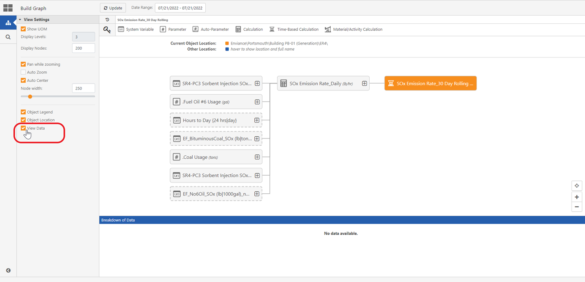
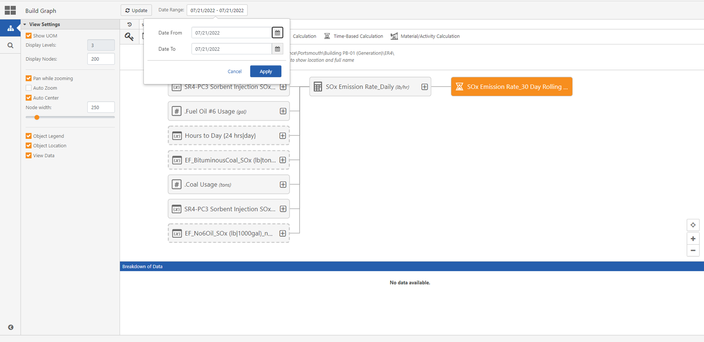
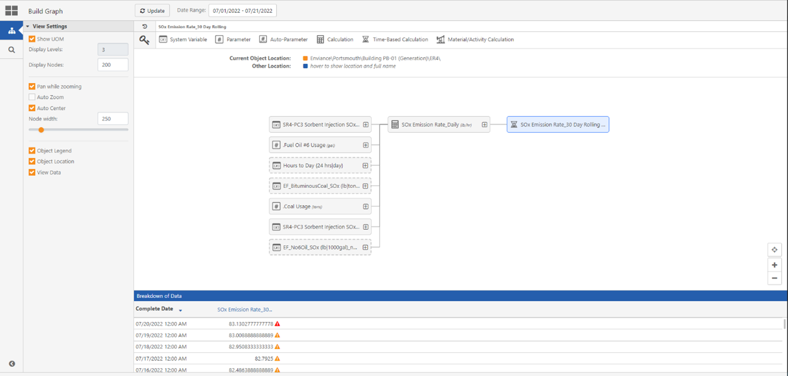
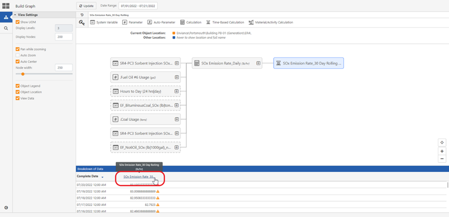
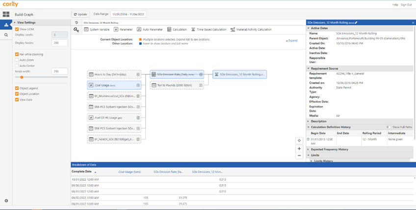
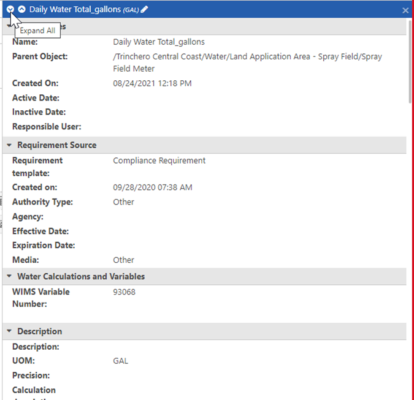
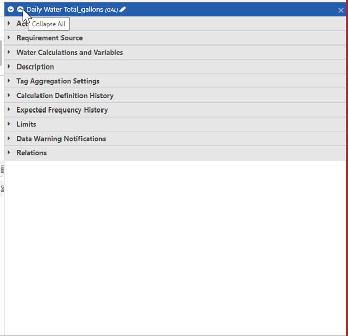

With the View data function, users can view data calculations for a requirement, and the changes in calculation definitions over time. By clicking on a requirement in the Breakdown of Data section, users can further look at the properties of a requirement.
To View Data for a Requirement
On the Calc Graph Visualizer window, click the Build Graph tab.
Under the View Settings, click the View Data checkbox.

Once the checkmark in front of View data displays, the Breakdown of Data section appears.
This section will be blank before any requirement is selected.
On the header of the Calc Graph Visualizer window, click the Date Range icon.
The Date Range selector allows users to observe the history of calculations, and any changes in formulas within the selected date range.


Data in the Breakdown of Data section by default is displayed in descending date order, you can click the date column for the order to be changed to ascending order.

The Properties panel will open on the right side of the Calc Graph Visualizer window.

If the View Data checkbox is not selected, the Properties panel will automatically display on the right of the Calc Graph Visualizer window when a requirement is selected on the graph.

